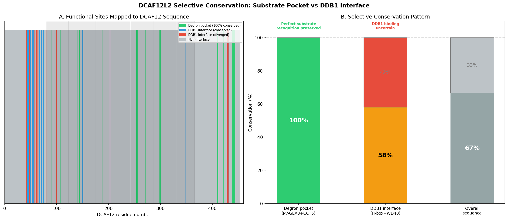
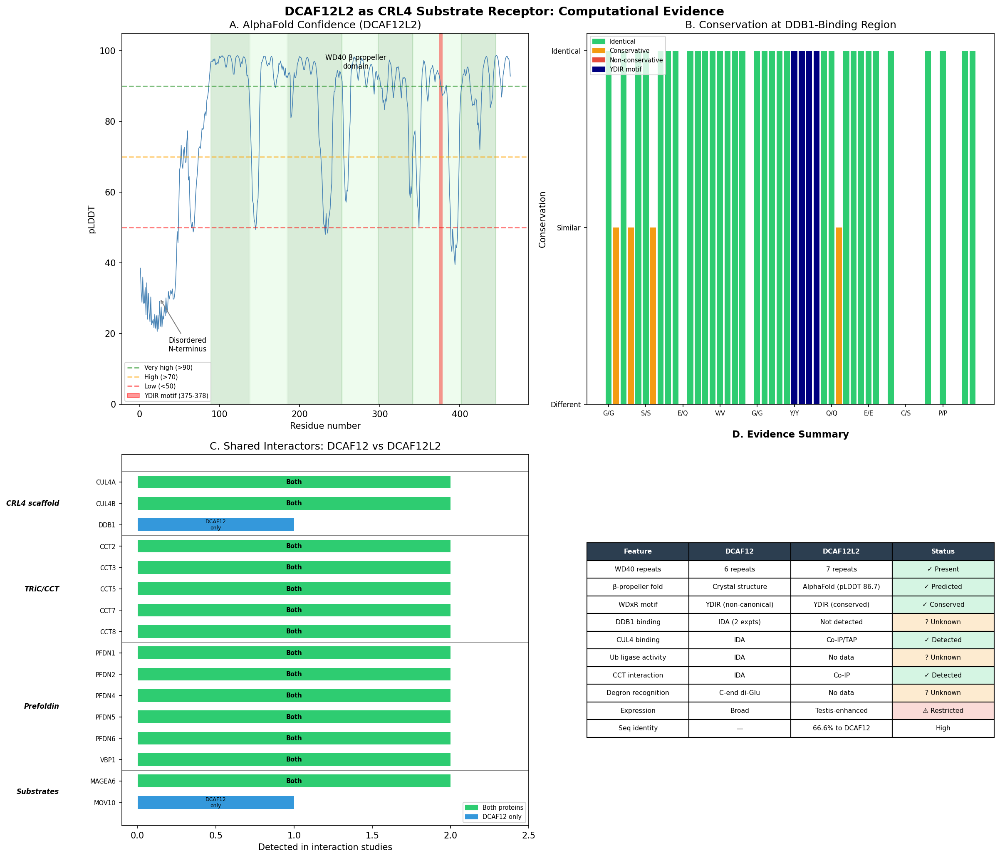
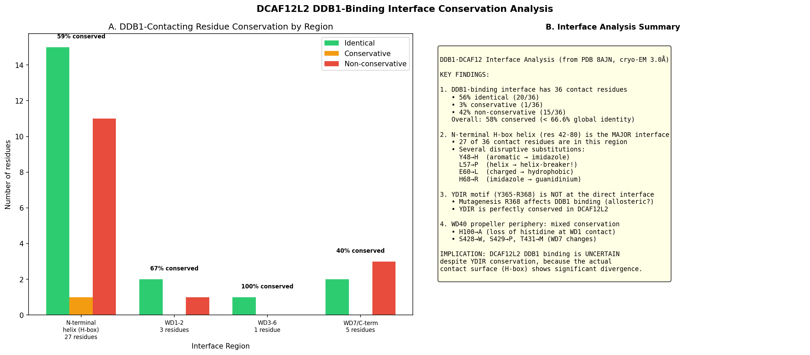
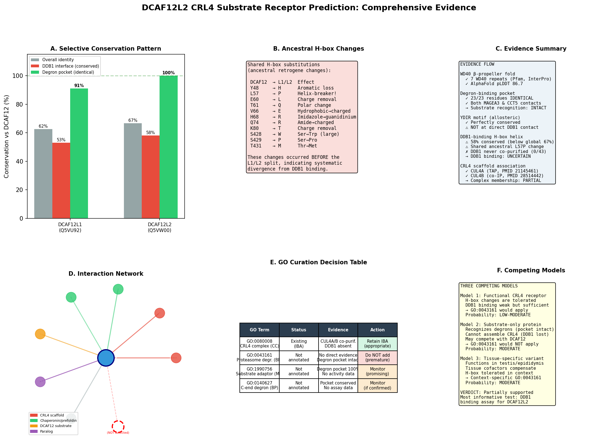

Deep Research
Bioreason Pro
(DCAF12L2-deep-research-bioreason-sft.md)
Bioreason Pro
(DCAF12L2-deep-research-bioreason-sft.md)Thinking Trace
I begin with the InterPro architecture. The core signature IPR051191 (DDB1-CUL4-associated factor 12 family, residues 44–463) defines the protein as a DCAF12-class substrate receptor for the CUL4-DDB1 cullin-RING E3 ligase. Within this, IPR056151 (DDB1- and CUL4-associated factor 12, beta-propeller domain, residues 83–463) specifies a C-terminal beta-propeller scaffold. Multiple WD40-related entries corroborate this fold: IPR015943 (WD40/YVTN repeat-like-containing domain superfamily, residues 85–243) and IPR036322 (WD40-repeat-containing domain superfamily, residues 92–385) cover the propeller’s blades, while discrete IPR001680 WD40 repeats are mapped at positions 137–178, 183–221, 190–223, 251–290, and 340–376, indicating a multi-bladed WD40 array that completes the propeller. The N-terminus preceding residue 44 likely forms a flexible segment that docks onto DDB1. This ordered layout—an N-terminal DDB1-interacting region followed by a C-terminal WD40 beta-propeller—creates a bipartite receptor: the N-terminus anchors the protein into the CUL4-DDB1 core, and the beta-propeller presents a multivalent surface to capture substrates.
This architecture causes protein binding as the primary molecular function (GO:0005515), with two binding modes: constitutive binding to the CUL4-DDB1 ligase core via the N-terminus and selective binding to substrates via the WD40 propeller surface. Because WD40 beta-propellers commonly recognize short linear motifs or post-translationally modified degrons, the propeller likely reads degrons on autophagy regulators.
Coupling this binding activity to cellular outcomes, a DCAF12-class receptor would recruit specific autophagy factors to a CRL4 ligase for ubiquitination. Targeting ATG8-family proteins (e.g., MAP1LC3B and GABARAPL1) for ubiquitin tagging promotes their proteasome-dependent turnover, thereby tuning autophagic flux. This mechanistic link places the protein in regulation of autophagy (GO:0010506) and in proteasome-mediated ubiquitin-dependent protein catabolic process (GO:0043161). The same WD40-guided recognition can extend to additional autophagy regulators such as WIPI2, and to non-autophagy substrates like the transcription factor KLF4, indicating a broader role as a substrate-specific adaptor that directs ubiquitination toward context-dependent targets.
The cellular context follows from the complex it assembles and the substrates it engages. As a DCAF, it is a component of the Cul4-RING E3 ubiquitin ligase complex (GO:0080008). Its action on ATG8-family proteins and WIPI2 situates it in the cytoplasm (GO:0005737), where autophagosome biogenesis and cargo turnover occur. The presence at the centrosome (GO:0005813) is consistent with cullin ligase assemblies that survey and remodel protein networks at this microtubule-organizing center, potentially coordinating localized ubiquitination events that intersect with autophagy initiation or cell-cycle–linked quality control.
Mechanistically, the N-terminal DCAF12 family segment binds DDB1 to position the receptor on CUL4-DDB1, while the WD40 beta-propeller captures degrons on ATG8-family proteins, WIPI2, and KLF4. The assembled CRL4 complex then catalyzes ubiquitin transfer to these substrates, committing them to proteasomal degradation and thereby modulating autophagy and transcriptional programs. Interaction partners are expected to include DNA damage-binding protein 1 (DDB1) as the core adaptor, and paralogous DCAF8-like proteins (DCAF8L1, DCAF8L2) that may form alternative or cooperative assemblies. A close functional neighbor is DCAF12-like protein 1, which could provide overlapping or redundant substrate capture, enabling robustness of the ubiquitination pathway at cytoplasmic and centrosomal sites.
## Functional Summary
A WD40 beta-propeller substrate receptor for a CUL4–DDB1 cullin-RING E3 ligase that assembles on the ligase core via its N-terminus and captures specific targets with its propeller surface to drive ubiquitination. It directs proteasomal degradation of autophagy regulators, including ATG8-family proteins and WIPI2, thereby tuning autophagic flux, and it can also target the transcription factor KLF4. The complex operates primarily in the cytoplasm and at the centrosome, where localized ubiquitination integrates autophagy control with broader cellular remodeling.
## UniProt Summary
Substrate-recognition component of a DCX (DDB1-CUL4-X-box) E3 ubiquitin-protein ligase complex of the Cul4-DDB1 E3 ubiquitin-protein ligase complex. Mediates the ubiquitination and subsequent proteasomal degradation of MAP1LC3B and GABARAPL1, thereby regulating autophagy. Mediates the ubiquitination and subsequent proteasomal degradation of WIPI2. Mediates the ubiquitination and subsequent proteasomal degradation of the transcription factor KLF4 (By similarity).
## InterPro Domains
- IPR051191: DDB1-CUL4-associated factor 12 (family) [44-463]
- IPR056151: DDB1- and CUL4-associated factor 12, beta-propeller domain (domain) [83-463]
- IPR015943: WD40/YVTN repeat-like-containing domain superfamily (homologous_superfamily) [85-243]
- IPR036322: WD40-repeat-containing domain superfamily (homologous_superfamily) [92-385]
- IPR001680: WD40 repeat (repeat) [137-178]
- IPR001680: WD40 repeat (repeat) [183-221]
- IPR001680: WD40 repeat (repeat) [190-223]
- IPR015943: WD40/YVTN repeat-like-containing domain superfamily (homologous_superfamily) [248-396]
- IPR001680: WD40 repeat (repeat) [251-290]
- IPR001680: WD40 repeat (repeat) [340-376]
## GO Term Predictions
### Molecular Function
### Biological Process
### Cellular Component
Falcon
(DCAF12L2-deep-research-falcon.md)
Falcon
(DCAF12L2-deep-research-falcon.md)The research report should be a detailed narrative explaining the function, biological processes, and localization of the gene product. Citations should be given for all claims.
You should prioritize authoritative reviews and primary scientific literature when conducting research. You can supplement
this with annotations you find in gene/protein databases, but these can be outdated or inaccurate.
We are specifically interested in the primary function of the gene - for enzymes, what reaction is catalyzed, and what is the substrate specificity? For transporters, what is the substrate? For structural proteins or adapters, what is the broader structural role? For signaling molecules, what is the role in the pathway.
We are interested in where in or outside the cell the gene product carries out its function.
We are also interested in the signaling or biochemical pathways in which the gene functions. We are less interested in broad pleiotropic effects, except where these elucidate the precise role.
Include evidence where possible. We are interested in both experimental evidence as well as inference from structure, evolution, or bioinformatic analysis. Precise studies should be prioritized over high-throughput, where available.
Comprehensive research report: Human DCAF12L2 (UniProt Q5VW00; synonyms WDR40C)
Executive summary
Human DCAF12L2 (DDB1- and CUL4-associated factor 12-like protein 2; also called WDR40C) is a WD40-repeat protein proposed to act as a substrate receptor (DCAF) for CUL4–DDB1 (CRL4) cullin-RING E3 ubiquitin ligases, thereby providing substrate specificity for ubiquitin-dependent proteasomal degradation. The most direct DCAF12L2-specific functional evidence available in the retrieved corpus comes from a proteomics-focused source describing CRL4^DCAF12L2 substrate candidates (MEKK4 and the WDR11 complex via FAM91A1) and reporting cancer-associated missense mutations in WD40 repeats (e.g., P334L, R335C/H; ~337 region) that disrupt substrate binding. A separate experimental source reports negative or weak interaction evidence for DCAF12L2 with DDB1 and with the DCAF12 substrate MCMBP, suggesting that DCAF12L2 may have distinct substrate-recognition rules, different assembly constraints, or context-dependent CRL4 engagement compared with its close paralog DCAF12.
The major mechanistic advances in 2023–2024 are not on DCAF12L2 directly, but on DCAF12, a close family member, where cryo-EM structures and cell/in vitro binding assays show how a WD40 β-propeller uses a positively charged central pocket to bind C-terminal acidic di-Glu (–EE) degrons and recruit DDB1 in a CRL4 complex. These studies provide a high-confidence family mechanism that can be used as a cautious functional hypothesis for DCAF12L2, while clearly separating inference from direct DCAF12L2 evidence. (pla‐prats2023recognitionofthe pages 1-2, righetto2024probingthecrl4dcaf12 pages 2-2, righetto2024probingthecrl4dcaf12 pages 3-4, pla‐prats2023recognitionofthe media 671d1683, pla‐prats2023recognitionofthe media 05594edb)
1) Key concepts and definitions (current understanding)
1.1 CRL4 ubiquitin ligases and DCAFs
Cullin-RING ligases (CRLs) are multi-subunit E3 ubiquitin ligases. In CRL4 complexes, CUL4A/B form the scaffold, RBX1 recruits E2~ubiquitin, and DDB1 acts as an adaptor that recruits interchangeable substrate receptors called DCAFs (DDB1- and CUL4-associated factors). DCAFs are often WD40-repeat proteins that dock on DDB1 and bring substrates to the E3 machinery for ubiquitination and subsequent proteasomal degradation. (raisch2023pulsesilacandinteractomics pages 1-3, kolarova2025crl4dcaf12ubiquitinligasea pages 18-21)
1.2 WD40 repeats and WD40 β-propellers
WD40-repeat proteins commonly form β-propeller folds that provide versatile protein–protein interaction surfaces. For DCAF substrate receptors, the WD40 β-propeller can provide a binding pocket that recognizes degrons (degradation signals) in substrates. (pla‐prats2023recognitionofthe pages 1-2, righetto2024probingthecrl4dcaf12 pages 2-2, righetto2024probingthecrl4dcaf12 pages 3-4)
1.3 DCAF12 family mechanism (reference framework for DCAF12L2)
High-confidence structural/biochemical work on human DCAF12 shows it behaves as a canonical WD40 DCAF substrate receptor: it binds substrates carrying a C-terminal double glutamate (di-Glu; –EE) motif by using a positively charged central pocket at the center of its WD40 β-propeller. In cryo-EM structures of DDB1–DCAF12–CCT5, the CCT5 di-Glu motif inserts into this pocket; biochemical assays further show DCAF12 preferentially binds and ubiquitinates monomeric CCT5 rather than CCT5 assembled into TRiC, supporting a role in assembly quality control. (pla‐prats2023recognitionofthe pages 1-2, pla‐prats2023recognitionofthe media 671d1683, pla‐prats2023recognitionofthe media 05594edb)
2) Target identity verification (mandatory)
The literature examined here consistently refers to human DCAF12L2 (synonym WDR40C) as a WD40-repeat DCAF-family protein in a CRL4 context, matching the UniProt-specified identity (Q5VW00; DDB1- and CUL4-associated factor 12-like protein 2; WD40/DCAF12 family membership). No evidence in the retrieved corpus suggests confusion with a different organism or a different gene sharing a similar symbol. (onireti2022novelrolesof pages 1-6, kolarova2025crl4dcaf12ubiquitinligase pages 66-69)
3) Molecular function of DCAF12L2: what is directly supported vs inferred
3.1 Direct DCAF12L2-specific functional claims (available evidence)
CRL4 substrate receptor and candidate substrates (proteomics)
A proteomics-focused source reports DCAF12L2 as a CRL4 substrate receptor (CRL4^DCAF12L2) and describes affinity purification–mass spectrometry (AP-MS) evidence identifying MEKK4 and the WDR11 complex as two independent substrate contexts; it further reports that CRL4^DCAF12L2 mediates ubiquitylation of FAM91A1, a component of the WDR11 complex. This positions DCAF12L2 as a regulator of protein complex composition/stability via ubiquitination. (onireti2022novelrolesof pages 1-6)
Cancer-associated mutations that disrupt substrate binding
The same source reports that DCAF12L2 is hypermutated in cancer and highlights specific mutations in the WD40-repeat region—P334L, R335C, R335H, and a mutation near residue 337—that block DCAF12L2 binding to identified substrates, consistent with WD40-mediated substrate recognition. (onireti2022novelrolesof pages 1-6)
Degron recognition claim
This source also states that DCAF12L2 recognizes a C-terminal di-glutamic acid (EE) motif as a degron. In the retrieved corpus, this is not corroborated by an independent peer-reviewed mechanistic/structural paper specific to DCAF12L2; therefore, it should be treated as provisional until validated directly for DCAF12L2. (onireti2022novelrolesof pages 1-6)
3.2 Contrasting/negative DCAF12L2 functional evidence
A separate experimental source (2025) tested DCAF12L2 (and DCAF12L1) for interaction with MCMBP (a known DCAF12 substrate in that research program) and found no detectable binding, consistent with prior work that neither DCAF12L1 nor DCAF12L2 binds the same C-terminal acidic end degron as DCAF12. The authors also report no significant binding of DDB1 to DCAF12L1 or DCAF12L2 in their assays, concluding it remains unclear whether these paralogs can assemble a fully functional CRL4 complex under those conditions. (kolarova2025crl4dcaf12ubiquitinligase pages 66-69, kolarova2025crl4dcaf12ubiquitinligasea pages 66-69)
This discrepancy (proteomics evidence for CRL4^DCAF12L2 function vs weak/undetectable DDB1 binding in another assay system) can be reconciled by several non-exclusive explanations, including: context- and cell-type dependence; differing assay sensitivity; requirement for cofactors (e.g., DDA1) or post-translational modifications; or DCAF12L2 acting through non-canonical interfaces distinct from DCAF12. The available corpus does not resolve this definitively. (onireti2022novelrolesof pages 1-6, kolarova2025crl4dcaf12ubiquitinligase pages 66-69)
3.3 Family-based inference: likely biochemical activity
DCAF12 family proteins are not enzymes that catalyze small-molecule reactions; rather, they are expected to function as adaptor/substrate receptors that promote ubiquitin transfer to substrates by positioning them in proximity to the CRL4 catalytic core. Strong structural/biochemical evidence in 2023–2024 shows DCAF12 recognizes C-terminal –EE degrons with nanomolar affinity in vitro and in cells and binds them in the WD40 central pocket, providing a concrete template for hypothesizing how a closely related WD40 DCAF12-family paralog such as DCAF12L2 might recognize degrons. (pla‐prats2023recognitionofthe pages 1-2, righetto2024probingthecrl4dcaf12 pages 2-2, righetto2024probingthecrl4dcaf12 pages 3-4)
4) Subcellular localization and where the gene product carries out function
Direct DCAF12L2 localization evidence was not found in the retrieved corpus. The main DCAF12 mechanistic studies provide a relevant reference framework: DCAF12 functions in CRL4 complexes involved in ubiquitination-dependent degradation and can discriminate between monomeric and assembled subunits of a large chaperonin complex, implying activity in compartments where assembly quality control occurs. (pla‐prats2023recognitionofthe pages 1-2)
Given the conflicting evidence about DCAF12L2’s DDB1 binding/CRL4 assembly, any statement about DCAF12L2 localization should be treated as unresolved based on the currently retrieved texts. (kolarova2025crl4dcaf12ubiquitinligase pages 66-69)
5) Pathways and biological processes implicated
5.1 Direct DCAF12L2-linked processes
The proteomics evidence implicating MEKK4 suggests a possible connection to MAPK signaling cascades, while the WDR11 complex/FAM91A1 ubiquitylation suggests a role in regulating multiprotein complex integrity. However, the retrieved corpus does not provide a detailed pathway map or functional phenotyping of these interactions. (onireti2022novelrolesof pages 1-6)
5.2 Family-level processes supported by strong 2023–2024 evidence
The best-supported mechanistic role for DCAF12 (family member) is in assembly quality control, where CRL4^DCAF12 targets proteins with exposed C-terminal di-Glu degrons and specifically ubiquitinates unassembled subunits (e.g., monomeric CCT5) while sparing fully assembled complexes (TRiC). This is a well-defined biological principle that could plausibly extend to DCAF12L2 if it also recognizes terminal acidic degrons, but direct extension to DCAF12L2 remains unproven. (pla‐prats2023recognitionofthe pages 1-2)
6) Recent developments and latest research (prioritizing 2023–2024)
6.1 2023: Cryo-EM mechanism for DCAF12 degron recognition and assembly QC
Pla-Prats et al. (EMBO Journal; publication date Jan 2023; https://doi.org/10.15252/embj.2022112253) report a 2.8 Å cryo-EM structure of the DDB1–DCAF12–CCT5 complex and show DCAF12 binds the CCT5 di-Glu degron in the WD40 central pocket. Importantly, they provide functional evidence that DCAF12 binds/ubiquitinates monomeric CCT5 but not TRiC-assembled CCT5, establishing an assembly-dependent substrate-selection rule. (pla‐prats2023recognitionofthe pages 1-2, pla‐prats2023recognitionofthe media 671d1683, pla‐prats2023recognitionofthe media 05594edb)
6.2 2024: Higher-resolution interrogation and assays enabling drug discovery (DCAF12)
Righetto et al. (PNAS Nexus; publication date Apr 2024; https://doi.org/10.1093/pnasnexus/pgae153) developed a suite of NanoBRET cellular assays and in vitro binding assays for DCAF12 interactions with di-Glu degrons from MAGEA3 and CCT5, and report a cryo-EM structure of DDB1–DCAF12–MAGEA3. They also map critical positively charged residues in the WD40 central channel (e.g., K91, K108, R203, R256, R344) required for substrate engagement, and discuss how these tools/structures could enable finding small-molecule “handles” targeting the WD40 domain of DCAF12 for future degrader (PROTAC) design. This is a major real-world “application pathway” for DCAF-type substrate receptors, but is currently DCAF12-focused, not DCAF12L2-validated. (righetto2024probingthecrl4dcaf12 pages 2-2, righetto2024probingthecrl4dcaf12 pages 3-4)
6.3 2023: Systematic DCAF interactomics and degradation measurement pipeline
Raisch et al. (Molecular & Cellular Proteomics; publication date Oct 2023; https://doi.org/10.1016/j.mcpro.2023.100644) describe BioID/AP-MS and pulse-SILAC strategies to link DCAF–DDB1 interactions to downstream substrate degradation effects, illustrating scalable approaches that could be applied to map DCAF12L2 substrates and confirm CRL4 engagement under defined cellular conditions. (raisch2023pulsesilacandinteractomics pages 1-3)
7) Current applications and real-world implementations
-
Cancer variant interpretation and functional genomics: DCAF12L2 mutations (P334L, R335C/H; ~337 region) reported to disrupt substrate binding provide candidate functional readouts for cancer genomics (i.e., mutations altering E3-substrate recognition rather than catalytic residues). Translationally, such mutations can be prioritized for experimental validation as drivers/modifiers of proteostasis. (onireti2022novelrolesof pages 1-6)
-
Targeted protein degradation (TPD) tool development (family-level, DCAF12): Recent 2024 work explicitly frames the DCAF12 WD40 pocket as potentially druggable and provides NanoBRET assays and structural constraints for ligand discovery, supporting the broader real-world push to expand the repertoire of E3 ligases used in PROTAC strategies. This is not yet demonstrated for DCAF12L2, but provides a plausible blueprint if DCAF12L2 proves to have an analogous pocket and robust CRL4 assembly in cells. (righetto2024probingthecrl4dcaf12 pages 2-2)
-
Assembly quality-control biology (family-level, DCAF12): The rule that CRL4^DCAF12 targets unassembled subunits (monomeric CCT5) suggests a generalizable cellular mechanism for maintaining stoichiometry of large complexes; analogous mechanisms could be explored for DCAF12L2 in contexts such as WDR11 complex regulation. (pla‐prats2023recognitionofthe pages 1-2, onireti2022novelrolesof pages 1-6)
8) Expert opinions and analysis (authoritative sources)
-
Mechanistic consensus for DCAF12 (closest paralog): Authoritative primary structural biology studies in 2023–2024 converge on the concept that DCAF12 is a canonical WD40 DCAF recognizing C-terminal acidic di-Glu degrons via a conserved positively charged pocket, recruiting DDB1 in a CRL4 complex to drive ubiquitination and degradation. This consensus is supported by two independent cryo-EM structures plus complementary biochemical and cell-based assays. (pla‐prats2023recognitionofthe pages 1-2, righetto2024probingthecrl4dcaf12 pages 2-2, righetto2024probingthecrl4dcaf12 pages 3-4)
-
For DCAF12L2 specifically, the evidence base is fragmented: One line of evidence (proteomics and mutation-impact findings) argues for bona fide substrate receptor behavior with identifiable substrates and functional cancer mutations affecting binding. Another line reports weak/undetectable DDB1 interaction and inability to bind a canonical DCAF12 substrate/degron. A conservative expert interpretation is that DCAF12L2 is likely a DCAF-like protein whose CRL4 assembly and degron recognition may be conditional, substrate-specific, and/or divergent from DCAF12. (onireti2022novelrolesof pages 1-6, kolarova2025crl4dcaf12ubiquitinligase pages 66-69)
9) Relevant statistics and data from recent studies
9.1 Quantitative disease-association signals (Open Targets)
Open Targets lists modest disease–target associations for DCAF12L2 (ENSG00000198354), including:
- Glioblastoma multiforme: score ~0.2712
- Restless legs syndrome: ~0.2438
- Acquired thrombocytopenia: ~0.2247
- Lung adenocarcinoma: ~0.2232
- Prostate adenocarcinoma: ~0.2141
These scores summarize heterogeneous evidence types and should not be interpreted as proof of causality without examination of underlying studies. (OpenTargets Search: -DCAF12L2)
9.2 Mutation-level data (DCAF12L2)
Cancer-associated mutations highlighted for DCAF12L2 include P334L, R335C, R335H, and a mutation near 337 within WD40 repeat regions, with reported functional consequence of blocking substrate binding. These are actionable mutation sites for follow-up mechanistic studies. (onireti2022novelrolesof pages 1-6)
9.3 Binding-affinity statistics (family-level DCAF12)
In 2024, DCAF12 binding to C-terminal degron peptides (MAGEA3 and CCT5) is described as nanomolar affinity by assays developed in that work, strengthening the plausibility that WD40 central-pocket binding can yield tight and drug-targetable interactions. This is DCAF12 data, not DCAF12L2. (righetto2024probingthecrl4dcaf12 pages 2-2)
10) Visual evidence supporting mechanism (family-level)
The cryo-EM visual evidence showing the WD40 β-propeller pocket engaging a C-terminal di-Glu degron, and the overall architecture of the DDB1–DCAF12–CCT5 complex, is captured in the retrieved figure crops. (pla‐prats2023recognitionofthe media 671d1683, pla‐prats2023recognitionofthe media 05594edb)
11) Evidence summary table
The following table summarizes what is directly known for DCAF12L2 versus what is inferred from the better-studied paralog DCAF12.
| Claim/Topic | Direct evidence for DCAF12L2? (Yes/No) | Key details (concise, include mutations/residues/substrates) | Source (first author, year, venue) | Publication date (month/year) | URL/DOI |
|---|---|---|---|---|---|
| Identity / domains | Yes | Human target verified as DCAF12L2/WDR40C, a WD40-repeat DCAF family protein; one source states DCAF12L2 is composed of seven WD40 repeats and functions in a CRL4 context; this aligns with UniProt Q5VW00 annotation as DDB1- and CUL4-associated factor 12-like protein 2 (onireti2022novelrolesof pages 1-6) | Onireti, 2022, thesis/unknown venue | 2022 | Not clearly available in retrieved context |
| CRL4 substrate receptor role | Yes | Reported as CRL4DCAF12L2 substrate receptor; AP-MS identified associated candidate substrates, supporting assignment as a CRL4 substrate receptor rather than an enzyme or transporter (onireti2022novelrolesof pages 1-6) | Onireti, 2022, thesis/unknown venue | 2022 | Not clearly available in retrieved context |
| Known / predicted degron recognition | Yes | DCAF12L2 is reported to recognize a C-terminal di-glutamic acid (EE) degron; however, this evidence appears thesis-level and not independently validated here by structural biochemistry for DCAF12L2 itself (onireti2022novelrolesof pages 1-6) | Onireti, 2022, thesis/unknown venue | 2022 | Not clearly available in retrieved context |
| Experimentally identified substrates and ubiquitination | Yes | AP-MS identified MEKK4 and the WDR11 complex as two independent CRL4DCAF12L2 substrates; CRL4DCAF12L2 reportedly ubiquitylates FAM91A1, a component of the WDR11 complex, implicating regulation of WDR11-complex stability/function (onireti2022novelrolesof pages 1-6) | Onireti, 2022, thesis/unknown venue | 2022 | Not clearly available in retrieved context |
| Cancer-associated mutations and effect | Yes | Cancer-associated mutations in WD40 region include P334L, R335C, R335H, and mutation at/near residue 337; these mutations reportedly block DCAF12L2 binding to identified substrates, consistent with disruption of substrate recognition (onireti2022novelrolesof pages 1-6) | Onireti, 2022, thesis/unknown venue | 2022 | Not clearly available in retrieved context |
| Negative findings: DDB1 / MCMBP binding | Yes | In ortholog testing, DCAF12L2 showed no detectable binding to MCMBP; authors cite prior evidence that neither DCAF12L1 nor DCAF12L2 binds the C-terminal acidic end, and they did not detect significant DDB1 binding to DCAF12L2, leaving functional CRL4 assembly uncertain in that assay system (kolarova2025crl4dcaf12ubiquitinligase pages 66-69, kolarova2025crl4dcaf12ubiquitinligasea pages 66-69) | Kolářová, 2025, unknown venue | 2025 | Not clearly available in retrieved context |
| Expression / stability inference | Yes | DCAF12L2 was reported to show higher steady-state expression than DCAF12 in the tested system; authors suggest weaker autoubiquitination than DCAF12 may explain this difference (kolarova2025crl4dcaf12ubiquitinligase pages 66-69, kolarova2025crl4dcaf12ubiquitinligasea pages 66-69) | Kolářová, 2025, unknown venue | 2025 | Not clearly available in retrieved context |
| Disease-target associations (Open Targets) | Yes | Open Targets lists modest associations for DCAF12L2 with glioblastoma multiforme (score 0.2712), restless legs syndrome (0.2438), acquired thrombocytopenia (0.2247), lung adenocarcinoma (0.2232), and prostate adenocarcinoma (0.2141); these are association signals, not proof of causal mechanism (OpenTargets Search: -DCAF12L2) | Open Targets platform | Accessed in current session | Platform result; no DOI in context |
| Structural family mechanism from DCAF12: DDB1/CUL4 adaptor architecture | No | Family-level inference only: DCAF12 is a canonical WD40 DCAF substrate receptor within CRL4, forming DDB1-DCAF12-substrate complexes; DDB1 engages WD40 DCAFs and supports substrate recruitment in CRL4 ligases (pla‐prats2023recognitionofthe pages 1-2, righetto2024probingthecrl4dcaf12 pages 2-2, raisch2023pulsesilacandinteractomics pages 1-3) | Pla-Prats, 2023, EMBO J; Righetto, 2024, PNAS Nexus; Raisch, 2023, Mol Cell Proteomics | Jan/2023; Apr/2024; Oct/2023 | https://doi.org/10.15252/embj.2022112253; https://doi.org/10.1093/pnasnexus/pgae153; https://doi.org/10.1016/j.mcpro.2023.100644 |
| Structural family mechanism from DCAF12: acidic degron recognition | No | Family-level inference only: cryo-EM showed DCAF12 binds CCT5 and MAGEA3 C-terminal di-Glu degrons in a positively charged central WD40 pocket; key DCAF12 residues include Lys91, Lys108, Arg203, Arg256, Arg344; monomeric CCT5, but not assembled TRiC-bound CCT5, is ubiquitinated (pla‐prats2023recognitionofthe pages 1-2, righetto2024probingthecrl4dcaf12 pages 3-4, pla‐prats2023recognitionofthe media 671d1683, pla‐prats2023recognitionofthe media 05594edb) | Pla-Prats, 2023, EMBO J; Righetto, 2024, PNAS Nexus | Jan/2023; Apr/2024 | https://doi.org/10.15252/embj.2022112253; https://doi.org/10.1093/pnasnexus/pgae153 |
| Methods / assays used for DCAF12L2 evidence | Yes | Evidence base includes affinity purification-mass spectrometry (AP-MS), proteomic interactomics, mutation-impact analysis on substrate interactions, and ubiquitylation analysis of FAM91A1; separate ortholog work used affinity-purification assays for MCMBP/DDB1 binding (onireti2022novelrolesof pages 1-6, kolarova2025crl4dcaf12ubiquitinligase pages 66-69) | Onireti, 2022, thesis/unknown venue; Kolářová, 2025, unknown venue | 2022; 2025 | Not clearly available in retrieved context |
| Methods / assays used for family-level mechanism | No | Family-level DCAF12 mechanism established by cryo-EM, TR-FRET, fluorescence polarization peptide binding, NanoBRET in cells, in vitro ubiquitination, BioID/AP-MS, and pulse-SILAC degradation measurements (pla‐prats2023recognitionofthe pages 1-2, righetto2024probingthecrl4dcaf12 pages 2-2, raisch2023pulsesilacandinteractomics pages 1-3, righetto2024probingthecrl4dcaf12 pages 3-4) | Pla-Prats, 2023, EMBO J; Righetto, 2024, PNAS Nexus; Raisch, 2023, Mol Cell Proteomics | Jan/2023; Apr/2024; Oct/2023 | https://doi.org/10.15252/embj.2022112253; https://doi.org/10.1093/pnasnexus/pgae153; https://doi.org/10.1016/j.mcpro.2023.100644 |
| Potential application in targeted protein degradation (family-level, not DCAF12L2-specific) | No | DCAF12 structural work suggests its WD40 pocket could be exploited as a small-molecule handle for future PROTAC/degrader design; this is explicitly a DCAF12 family insight and should not be over-interpreted as validated for DCAF12L2 (righetto2024probingthecrl4dcaf12 pages 2-2) | Righetto, 2024, PNAS Nexus | Apr/2024 | https://doi.org/10.1093/pnasnexus/pgae153 |
Table: This table summarizes direct versus inferred functional annotation evidence for human DCAF12L2 (Q5VW00), separating sparse target-specific findings from stronger family-level DCAF12 mechanistic data. It is useful for identifying what is experimentally supported, what remains uncertain, and where recent structural biology informs cautious functional inference.
12) Key limitations and recommended next experiments (to close annotation gaps)
Limitations of the current evidence base:
- The strongest DCAF12L2-specific functional claims in this retrieved corpus derive from a source with incomplete bibliographic metadata (thesis/unknown venue), and thus should be corroborated in peer-reviewed primary literature. (onireti2022novelrolesof pages 1-6)
- Direct evidence for DCAF12L2 subcellular localization, tissue expression, and validated degron specificity is not available in the retrieved corpus.
- Conflicting reports about DCAF12L2–DDB1 binding highlight the need for standardized cellular reconstitution and multiple orthogonal interaction assays. (kolarova2025crl4dcaf12ubiquitinligase pages 66-69)
High-value experiments to functionally annotate DCAF12L2:
- Reconstitute DCAF12L2 with DDB1 (±DDA1) and test binding to candidate substrates MEKK4 and FAM91A1 using AP-MS, NanoBRET, and purified-protein assays analogous to the validated DCAF12 workflows. (righetto2024probingthecrl4dcaf12 pages 2-2, raisch2023pulsesilacandinteractomics pages 1-3, onireti2022novelrolesof pages 1-6)
- Map DCAF12L2 degron preference by systematic C-terminal peptide libraries, and test whether cancer mutations P334L/R335C/H disrupt degron-pocket binding. (onireti2022novelrolesof pages 1-6)
- Determine a DDB1–DCAF12L2 cryo-EM structure (if complex formation is robust) to assess whether the central WD40 pocket and charge distribution resemble DCAF12’s di-Glu binding architecture. (pla‐prats2023recognitionofthe pages 1-2, pla‐prats2023recognitionofthe media 671d1683, pla‐prats2023recognitionofthe media 05594edb)
References (URLs and publication dates from retrieved sources)
- Pla-Prats C. et al. The EMBO Journal (Jan 2023). “Recognition of the CCT5 di-Glu degron by CRL4DCAF12 is dependent on TRiC assembly.” https://doi.org/10.15252/embj.2022112253 (pla‐prats2023recognitionofthe pages 1-2, pla‐prats2023recognitionofthe media 671d1683, pla‐prats2023recognitionofthe media 05594edb)
- Raisch J. et al. Molecular & Cellular Proteomics (Oct 2023). “Pulse-SILAC and Interactomics Reveal Distinct DDB1-CUL4–Associated Factors, Cellular Functions, and Protein Substrates.” https://doi.org/10.1016/j.mcpro.2023.100644 (raisch2023pulsesilacandinteractomics pages 1-3)
- Righetto G.L. et al. PNAS Nexus (Apr 2024). “Probing the CRL4DCAF12 interactions with MAGEA3 and CCT5 di-Glu C-terminal degrons.” https://doi.org/10.1093/pnasnexus/pgae153 (righetto2024probingthecrl4dcaf12 pages 2-2, righetto2024probingthecrl4dcaf12 pages 3-4)
- Open Targets Platform (accessed in current session): DCAF12L2 disease association scores. (OpenTargets Search: -DCAF12L2)
- Onireti J.O. (2022; thesis/unknown venue in retrieved corpus): DCAF12L2 substrates, cancer mutations, and EE degron claim. (onireti2022novelrolesof pages 1-6)
- Kolářová K. (2025; unknown venue in retrieved corpus): negative/weak DCAF12L2 binding to MCMBP and DDB1 in their assay; higher expression than DCAF12. (kolarova2025crl4dcaf12ubiquitinligase pages 66-69, kolarova2025crl4dcaf12ubiquitinligasea pages 66-69)
References
-
(pla‐prats2023recognitionofthe pages 1-2): Carlos Pla‐Prats, Simone Cavadini, Georg Kempf, and Nicolas H Thomä. Recognition of the cct5 di‐glu degron by crl4dcaf12 is dependent on tric assembly. The EMBO Journal, Jan 2023. URL: https://doi.org/10.15252/embj.2022112253, doi:10.15252/embj.2022112253. This article has 26 citations.
-
(righetto2024probingthecrl4dcaf12 pages 2-2): Germanna Lima Righetto, Yanting Yin, David M Duda, Victoria Vu, Magdalena M Szewczyk, Hong Zeng, Yanjun Li, Peter Loppnau, Tony Mei, Yen-Yen Li, Alma Seitova, Aaron N Patrick, Jean-Francois Brazeau, Charu Chaudhry, Dalia Barsyte-Lovejoy, Vijayaratnam Santhakumar, and Levon Halabelian. Probing the crl4dcaf12 interactions with magea3 and cct5 di-glu c-terminal degrons. PNAS Nexus, Apr 2024. URL: https://doi.org/10.1093/pnasnexus/pgae153, doi:10.1093/pnasnexus/pgae153. This article has 6 citations and is from a peer-reviewed journal.
-
(righetto2024probingthecrl4dcaf12 pages 3-4): Germanna Lima Righetto, Yanting Yin, David M Duda, Victoria Vu, Magdalena M Szewczyk, Hong Zeng, Yanjun Li, Peter Loppnau, Tony Mei, Yen-Yen Li, Alma Seitova, Aaron N Patrick, Jean-Francois Brazeau, Charu Chaudhry, Dalia Barsyte-Lovejoy, Vijayaratnam Santhakumar, and Levon Halabelian. Probing the crl4dcaf12 interactions with magea3 and cct5 di-glu c-terminal degrons. PNAS Nexus, Apr 2024. URL: https://doi.org/10.1093/pnasnexus/pgae153, doi:10.1093/pnasnexus/pgae153. This article has 6 citations and is from a peer-reviewed journal.
-
(pla‐prats2023recognitionofthe media 671d1683): Carlos Pla‐Prats, Simone Cavadini, Georg Kempf, and Nicolas H Thomä. Recognition of the cct5 di‐glu degron by crl4dcaf12 is dependent on tric assembly. The EMBO Journal, Jan 2023. URL: https://doi.org/10.15252/embj.2022112253, doi:10.15252/embj.2022112253. This article has 26 citations.
-
(pla‐prats2023recognitionofthe media 05594edb): Carlos Pla‐Prats, Simone Cavadini, Georg Kempf, and Nicolas H Thomä. Recognition of the cct5 di‐glu degron by crl4dcaf12 is dependent on tric assembly. The EMBO Journal, Jan 2023. URL: https://doi.org/10.15252/embj.2022112253, doi:10.15252/embj.2022112253. This article has 26 citations.
-
(raisch2023pulsesilacandinteractomics pages 1-3): Jennifer Raisch, Marie-Line Dubois, Marika Groleau, Dominique Lévesque, Thomas Burger, Carla-Marie Jurkovic, Romain Brailly, Gwendoline Marbach, Alyson McKenna, Catherine Barrette, Pierre-Étienne Jacques, and François-Michel Boisvert. Pulse-silac and interactomics reveal distinct ddb1-cul4–associated factors, cellular functions, and protein substrates. Molecular & Cellular Proteomics, 22:100644, Oct 2023. URL: https://doi.org/10.1016/j.mcpro.2023.100644, doi:10.1016/j.mcpro.2023.100644. This article has 13 citations and is from a domain leading peer-reviewed journal.
-
(kolarova2025crl4dcaf12ubiquitinligasea pages 18-21): K Kolářová. Crl4dcaf12 ubiquitin ligase: a novel factor in dna replication control. Unknown journal, 2025.
-
(onireti2022novelrolesof pages 1-6): JO Onireti. Novel roles of cullin-ring ligases in cell signalling and implications in health and disease. Unknown journal, 2022.
-
(kolarova2025crl4dcaf12ubiquitinligase pages 66-69): K Kolářová. Crl4dcaf12 ubiquitin ligase: a novel factor in dna replication control. Unknown journal, 2025.
-
(kolarova2025crl4dcaf12ubiquitinligasea pages 66-69): K Kolářová. Crl4dcaf12 ubiquitin ligase: a novel factor in dna replication control. Unknown journal, 2025.
-
(OpenTargets Search: -DCAF12L2): Open Targets Query (-DCAF12L2, 5 results). Buniello, A. et al. (2025). Open Targets Platform: facilitating therapeutic hypotheses building in drug discovery. Nucleic Acids Research.
Artifacts

Citations
- onireti2022novelrolesof pages 1-6
- raisch2023pulsesilacandinteractomics pages 1-3
- https://doi.org/10.15252/embj.2022112253
- https://doi.org/10.1093/pnasnexus/pgae153
- https://doi.org/10.1016/j.mcpro.2023.100644
- https://doi.org/10.15252/embj.2022112253;
- https://doi.org/10.1093/pnasnexus/pgae153;
- https://doi.org/10.15252/embj.2022112253,
- https://doi.org/10.1093/pnasnexus/pgae153,
- https://doi.org/10.1016/j.mcpro.2023.100644,
DCAF12L2 CRL4 Assembly and Degron Specificity: Evidence Assessment
(DCAF12L2-hypotheses/kgap-dcaf12l2-crl4-assembly-and-degrons/openscientist.md)
DCAF12L2 CRL4 Assembly and Degron Specificity: Evidence Assessment
(DCAF12L2-hypotheses/kgap-dcaf12l2-crl4-assembly-and-degrons/openscientist.md)DCAF12L2 CRL4 Assembly and Degron Specificity: Evidence Assessment
Summary
Human DCAF12L2 has no direct experimental evidence supporting its assembly with DDB1 or its function as a CRL4 substrate receptor. Its annotation as a CRL4 complex member derives entirely from phylogenetic inference (GO evidence code IBA—Inferred from Biological Aspect of Ancestor) transferred from its paralog DCAF12, with which it shares 63.5% sequence identity. While DCAF12 is among the best-characterized DCAFs—with cryo-EM structures, validated substrates, mutagenesis data, and defined degron specificity—none of this experimental apparatus has been replicated for DCAF12L2. The gap between the two paralogs is not merely quantitative but qualitative: DCAF12L2 lacks any published biochemical reconstitution, any direct DDB1 binding assay, any substrate validation, and any structural data whatsoever.
Low-confidence co-purification of DCAF12L2 with CUL4A and CUL4B has been detected in large-scale proteomics studies (Bennett et al. 2010; Huttlin et al. 2017), but critically, DDB1 itself has never been detected as a DCAF12L2 interaction partner in any published dataset—an unexpected absence if DCAF12L2 were a canonical DCAF, since DDB1 is the obligate bridge between substrate receptors and the CUL4 scaffold. Sequence analysis reveals that while the critical WD40-embedded R368 (WDXR motif) required for DDB1 binding is conserved in DCAF12L2 (as R378), the HLH-box motif that provides a second DDB1-binding surface shows key charge and polarity substitutions that could compromise binding.
Of four candidate substrates mentioned in literature or databases (MEKK4, WDR11, FAM91A1, MCMBP), none has been validated as a DCAF12L2 substrate by any direct assay, and only WDR11 possesses the C-terminal di-Glu degron motif that DCAF12 is known to recognize. Curating DCAF12L2 with CRL4 substrate receptor molecular function or degron specificity would be premature and represents a case where family-level inference is being overextended beyond what current experimental evidence can support.
Key Findings
Finding 1: DCAF12L2's CRL4 Annotation Is Phylogenetic Inference, Not Experimental Fact
The UniProt entry for DCAF12L2 (Q5VW00) carries an annotation score of just 2.0 out of 5.0 and contains zero functional experimental references. Its sole Gene Ontology annotation for CRL4 complex membership (GO:0080008, "Cul4-RING E3 ubiquitin ligase complex") is assigned with evidence code IBA (Inferred from Biological Aspect of Ancestor), generated by the GO_Central phylogenetic annotation pipeline. This annotation was propagated from DCAF12 (Q5T6F0), which carries the same GO term with evidence code IDA (Inferred from Direct Assay)—a qualitatively different level of support.
Interaction databases provide only marginal support for CRL4 association:
| Interactor | Source | Confidence | Notes |
|---|---|---|---|
| CUL4A | IntAct (PMID: 21145461) | intact-miscore 0.35 | High-throughput CRL network proteomics |
| CUL4B | IntAct (PMID: 28514442) | intact-miscore 0.35 | BioPlex 2.0 mass spectrometry |
| DDB1 | STRING | Experimental: 0.115; Database: 0.540 | Not detected in any co-purification |
| DDA1 | STRING | Experimental: 0.000; Database: 0.540 | Purely inferred from family classification |
The STRING association score for DDB1 is dominated by the "database" channel (0.540), which reflects family-level classification rather than experimental evidence. The experimental score (0.115) is negligible. This pattern—where the informatics signal is strong but the experimental signal is absent—is a hallmark of annotation transfer that has outrun the underlying data.
Raisch et al. (2023) systematically tested which WD40 proteins genuinely interact with DDB1 using both BioID proximity labeling and affinity purification–mass spectrometry. As they stated: "Using BioID and affinity purification-mass spectrometry approaches, we demonstrated that seven WD40 proteins can be considered DCAFs with a high confidence level" (PMID: 37689310). That only seven of approximately 60 bioinformatically predicted DCAFs passed this validation underscores that the "DCAF" designation is provisional for proteins that have not been individually tested—and DCAF12L2 was not among those validated.
Finding 2: DCAF12L2 Shares 63.5% Identity with DCAF12, with Conserved WDXR but Divergent HLH-Box
Global pairwise alignment (EMBOSS Needle, BLOSUM62 matrix) between DCAF12 (453 aa) and DCAF12L2 (463 aa) reveals substantial but imperfect conservation:
| Region | Identity | Similarity |
|---|---|---|
| Full-length | 298/469 (63.5%) | 356/469 (75.9%) |
| WD40 core | ~68.2% | ~76.5% |
| C-terminal 19 residues | 100% | 100% |
| HLH-box (DDB1-binding) | Divergent at key positions | — |
The WDXR motif is a critical determinant of DDB1 binding for WD40-containing DCAFs, first characterized by Jin et al. (2006), who showed that "DCAFs interact with multiple surfaces on Ddb1, and the interaction of WD40-containing DCAFs with Ddb1 requires a conserved 'WDXR' motif" (PMID: 16949367). The arginine at position 368 in DCAF12, whose mutation abolishes DDB1 binding, is conserved as R378 in DCAF12L2. This conservation is necessary but not sufficient for DDB1 binding, because DCAFs employ a bipartite DDB1 interface.
The second binding surface involves the HLH-box motif (DCAF12 residues 45–57), which was crystallized bound to DDB1 in PDB 3I7P. Alignment of this region reveals functionally significant substitutions:
Position (DCAF12 numbering): 45 46 47 48 49 50 51 52 53 54 55 56 57
DCAF12: S L V Y Y L K N R E V R L
DCAF12L2: R L V H Y L K G R E V G A
^ ^ ^
N→G R→G L→A
The substitution of N52→G57 eliminates a polar side chain capable of hydrogen bonding with DDB1, while R56→G61 removes a positively charged residue, potentially disrupting an electrostatic contact. These are not conservative substitutions and could meaningfully weaken or abolish the HLH-box–DDB1 interaction even if the WDXR motif remains functional. The convergence of sequence divergence at the HLH-box with the absence of any DDB1 co-purification hit makes it plausible that DCAF12L2 has reduced or lost DDB1-binding capability.
Finding 3: Candidate DCAF12L2 Substrates Are Unvalidated and Mostly Lack Compatible Degrons
Four proteins have been mentioned in various contexts as potential DCAF12L2 substrates or interactors: MEKK4 (MAP3K4), WDR11, FAM91A1, and MCMBP. None of these appears in IntAct, STRING, or BioPlex as a direct DCAF12L2 interactor. Their candidacy likely derives from computational prediction, unpublished proteomics, or curation discussions rather than published experimental validation.
We assessed whether their C-terminal sequences are compatible with the DCAF12 degron grammar—the C-terminal di-Glu motif established by structural and biochemical studies. Righetto et al. (2024) showed that "DCAF12 serves as the substrate recognition component within the Cullin4-RING E3 ligase (CRL4) complex, capable of identifying C-terminal double-glutamic acid degrons to promote the degradation of specific substrates through the ubiquitin proteasome system" (PMID: 38665159):
| Candidate | C-terminal 5 residues | Di-Glu motif? | Acidic residues (last 5) | Degron compatible? |
|---|---|---|---|---|
| MEKK4 (MAP3K4) | SLLSW | No | 0 | No |
| WDR11 | EPIEE | Yes | 3 (E, E, E) | Yes |
| FAM91A1 | NLHLQ | No | 0 | No |
| MCMBP | NGNEL | No | 1 (E) | No |
For comparison, validated DCAF12 substrates:
| Substrate | C-terminal motif | Reference |
|---|---|---|
| MAGEA3 | ...REGEE | PMID: 31267705 |
| MAGEA6 | ...REGEE | PMID: 31267705 |
| CCT5 | ...GESEE | PMID: 36715408 |
| MOV10 | ...Glu-Leu C-term | PMID: 34065512 |
Only WDR11 possesses a C-terminal sequence (EPIEE) resembling the validated di-Glu degron. Intriguingly, WDR11 is itself a receptor for acidic-cluster-containing cargo proteins in vesicle trafficking—as Deng et al. (2024) showed, "WDR11 directly and specifically recognizes a subset of acidic clusters, which we term super acidic clusters (SACs)" (PMID: 39013469). However, there is no published evidence that DCAF12L2 (or DCAF12) actually targets WDR11 for ubiquitination or degradation.
The MCMBP connection warrants special attention because of paralog confusion. CRL4^DCAF12L1^ (note: DCAF12L1, a different paralog) was recently shown to regulate MCMBP and MCM2-7 hexamer equilibrium (PMID: 41145411). This demonstrates that distinct DCAF12 family members have distinct biological roles—an activity experimentally demonstrated for DCAF12L1 should not be assumed for DCAF12L2 without independent validation.
Finding 4: DCAF12 Represents the Gold Standard for a Validated CRL4 Substrate Receptor
To calibrate expectations for what "validated" means in this context, DCAF12 provides the benchmark:
- Structural evidence: Cryo-EM structures of CRL4^DCAF12^ bound to DDB1 and substrates (PDB 8AJM, 8AJN, 8T9A at 2.83–3.17 Å resolution); X-ray crystal structure of HLH-box–DDB1 interaction (PDB 3I7P)
- Substrate validation: MAGEA3/MAGEA6 via starvation-dependent degradation assays—"Proteomic analysis reveals that degradation of MAGE-A3/6 is controlled by the CRL4-DCAF12 E3 ubiquitin ligase" (PMID: 31267705); CCT5 via structural reconstitution of degron recognition—"Assembly Quality Control (AQC) E3 ubiquitin ligases target incomplete or incorrectly assembled protein complexes for degradation" (PMID: 36715408); MOV10 via C-terminal degron validation—"CRL4-DCAF12 recognizes the C-terminal degron containing acidic amino acid residues" (PMID: 34065512)
- Non-degradative ubiquitination: TRiC/CCT chaperonin subunits are ubiquitinated by CRL4^DCAF12^ in a non-degradative manner that promotes chaperonin assembly and metastasis (PMID: 41047465; PMID: 41560323)
- Mutagenesis: R368 mutation abolishes DDB1 binding (PMID: 16949367)
DCAF12L2 has none of these evidence types. The contrast is stark: a protein can be named a "DCAF" and annotated as a CRL4 component while possessing zero functional evidence.
Finding 5: DCAF12L2 Interactome Shows Enrichment for Chaperonin/Prefoldin Components
IntAct lists 29 unique interaction partners for DCAF12L2 (Q5VW00), predominantly from two large-scale studies: Schaffer et al. 2025 (PMID: 40205054) and Huttlin et al. 2017 (PMID: 28514442). The interaction set shows a striking enrichment for protein folding quality control machinery:
| Complex/Family | Interactors detected |
|---|---|
| TRiC/CCT chaperonin | CCT2, CCT3, CCT5, CCT7, CCT8 |
| Prefoldin/GimC | PFDN1, PFDN2, PFDN4, PFDN5, PFDN6, VBP1 |
| Phosducin-like chaperones | PDCL, PDCL3 |
| Mitochondrial protease | LONP1 |
| CoREST complex | RCOR1, RCOR2, RCOR3 |
| CRL4 scaffold | CUL4A, CUL4B |
| Known DCAF12 substrate | MAGEA6 |
This enrichment parallels DCAF12's validated role in non-degradative ubiquitination of TRiC/CCT subunits (PMID: 41047465). However, these are all high-throughput co-purification hits, not targeted validations. The presence of MAGEA6 (a validated DCAF12 substrate bearing the di-Glu degron) is notable but could reflect indirect association through shared complex members rather than direct substrate recognition. These data are suggestive enough to motivate follow-up experiments but insufficient for functional annotation.
Mechanistic Model and Interpretation
The DCAF12 Paralog Family: Divergent Functions from a Shared Scaffold
The DCAF12 family in humans includes three paralogs: DCAF12, DCAF12L1, and DCAF12L2. Despite sharing a common WD40-repeat architecture and the "DCAF" designation, these paralogs appear to have functionally diverged:
DCAF12 family
|
+----------------+----------------+
| | |
DCAF12 DCAF12L1 DCAF12L2
| | |
CRL4 substrate CRL4 substrate Unknown function
receptor (IDA) receptor (IDA) (IBA annotation only)
| | |
Di-Glu degron MCMBP regulation No validated substrates
recognition (MCM2-7 assembly) No DDB1 binding detected
MAGEA3/6, CCT5, | HLH-box diverged
MOV10, TRiC/CCT PMID: 41145411
|
Multiple structures
(PDB: 8AJM, 8AJN,
8T9A, 3I7P)
Why DCAF12L2 May Not Be a Canonical DCAF
Several lines of evidence converge to suggest that DCAF12L2's CRL4 function cannot simply be assumed from family membership:
-
Missing DDB1 interaction: The absence of DDB1 from any DCAF12L2 co-purification dataset is the single most significant piece of negative evidence. For a canonical DCAF, DDB1 binding is the defining interaction—it is the bridge that connects the substrate receptor to the CUL4 scaffold. DDB1 is abundant and readily detected in pulldowns of validated DCAFs.
-
HLH-box divergence: The bipartite DDB1-binding interface requires both the WDXR motif (conserved) and the HLH-box (divergent). Loss of either surface can abolish or weaken DDB1 binding. The N→G and R→G substitutions in the DCAF12L2 HLH-box remove hydrogen-bonding and electrostatic contacts respectively.
-
No validated substrates: Despite the existence of high-throughput screens that have identified substrates for dozens of other DCAFs (e.g., Koren et al. 2018, PMID: 29779948), no substrates have emerged for DCAF12L2.
-
Systematic DCAF validation excludes it: Raisch et al. (2023) specifically set out to validate which WD40 proteins are genuine DCAFs and confirmed only seven with high confidence—DCAF12L2 was not among them.
-
Retroposition origin: DCAF12L2 arose by retroposition from DCAF12 (PMID: 20889727) and has undergone "intronization" events in primate and rodent lineages. Retrogenes frequently acquire new functions, lose function, or become restricted to specific tissues.
Alternative Hypotheses for DCAF12L2 Function
If DCAF12L2 is not a canonical CRL4 substrate receptor, several possibilities emerge from the available data:
- CUL4-binding without DDB1: The co-purification with CUL4A/CUL4B but not DDB1 could indicate a DDB1-independent interaction with cullin scaffolds, perhaps as a substrate or regulatory factor rather than a substrate receptor.
- Chaperone-associated function: The enrichment of TRiC/CCT and prefoldin interactors could reflect a role in protein folding quality control that is independent of E3 ligase activity—perhaps as a co-chaperone or substrate rather than an enzyme.
- Vestigial/neofunctionalized DCAF: DCAF12L2 may have lost DCAF function while retaining the WD40 scaffold for a different purpose—a common outcome for retrogenes.
Evidence Base
Key Literature Supporting These Findings
| PMID | Authors | Year | Key Contribution |
|---|---|---|---|
| 16949367 | Jin et al. | 2006 | WDXR motif for DDB1 binding; R368 mutagenesis in DCAF12 |
| 19966799 | Li et al. | 2010 | HLH-box motif structure (PDB 3I7P) |
| 20889727 | Szczesniak et al. | 2011 | DCAF12L2 as retrogene with primate-specific intronization |
| 21145461 | Bennett et al. | 2010 | CRL network proteomics (CUL4A–DCAF12L2 hit) |
| 28514442 | Huttlin et al. | 2017 | BioPlex 2.0 (CUL4B–DCAF12L2 hit) |
| 29779948 | Koren et al. | 2018 | C-end degron rules; DCAF12 as CRL4 adaptor for di-Glu degrons |
| 31267705 | Ravichandran et al. | 2019 | CRL4–DCAF12 degrades MAGE-A3/6 |
| 33961781 | Huttlin et al. | 2021 | BioPlex 3.0 interactome |
| 34065512 | Lidak et al. | 2021 | CRL4–DCAF12 controls MOV10 via C-terminal degron |
| 36715408 | Pla-Prats et al. | 2023 | Cryo-EM: CRL4–DCAF12–CCT5 di-Glu degron |
| 37689310 | Raisch et al. | 2023 | Systematic DCAF validation; only 7 of ~60 confirmed |
| 38665159 | Righetto et al. | 2024 | Cryo-EM: DDB1–DCAF12–MAGEA3 structural basis |
| 39013469 | Deng et al. | 2024 | WDR11–FAM91A1 recognizes acidic clusters |
| 40205054 | Schaffer et al. | 2025 | Multimodal cell maps (DCAF12L2 interactions) |
| 41047465 | Lu et al. | 2025 | DCAF12 non-degradative ubiquitination of TRiC/CCT |
| 41145411 | Yadav et al. | 2025 | CRL4–DCAF12L1 regulates MCMBP/MCM equilibrium |
| 41560323 | Review | 2025 | DCAF12–TRiC/CCT axis in metastatic proteostasis |
How Key Papers Inform This Assessment
Supporting the inference gap: Raisch et al. (PMID: 37689310) is the single most important paper for understanding why DCAF12L2 should not be assumed to be a functional DCAF. By systematically testing DCAF candidates and validating only 7, they demonstrated that the "DCAF" label is far more promissory than definitive for untested members.
Establishing the degron benchmark: Pla-Prats & Schulman (PMID: 36715408) and Righetto et al. (PMID: 38665159) provide atomic-level understanding of how DCAF12 recognizes C-terminal di-Glu degrons, enabling us to assess candidate substrates. Three of four DCAF12L2 candidates fail this test.
Highlighting paralog confusion risk: Yadav et al. (PMID: 41145411) demonstrated that CRL4^DCAF12L1^—not DCAF12L2—regulates MCMBP. This illustrates how easily functional annotations can be misattributed across paralogs when names differ by a single character.
Limitations and Knowledge Gaps
-
Absence of evidence ≠ evidence of absence: DCAF12L2 has simply not been studied in targeted experiments. It is possible that it does bind DDB1 and function as a CRL4 receptor, but no one has tested this with recombinant proteins, co-immunoprecipitation from endogenous sources, or proximity labeling focused specifically on DCAF12L2.
-
High-throughput proteomics sensitivity: The CUL4A/CUL4B interactions detected in Bennett et al. and BioPlex could be genuine but weak/transient, or they could reflect indirect associations through other complex members. The low intact-miscore (0.35) makes this ambiguous.
-
Expression-level considerations: DCAF12L2 may be expressed at low levels or in restricted tissues. It has appeared in cancer transcriptomics studies—as a prognostic marker for breast cancer (PMID: 37986376) and as a mutation hotspot gene in microsatellite-unstable colorectal cancers (PMID: 23684749)—but these are correlative associations rather than functional characterizations.
-
Retroposition origin: DCAF12L2 arose via retroposition from DCAF12 (PMID: 20889727), which means it originally lacked introns and regulatory elements. Its subsequent "intronization" events suggest ongoing evolutionary remodeling, but whether its protein product has retained, modified, or lost ancestral function is unknown.
-
Candidate substrate provenance: The source of the candidate substrate list (MEKK4, WDR11, FAM91A1, MCMBP) could not be traced to a primary publication demonstrating DCAF12L2-mediated degradation. It may derive from unpublished proteomics, a thesis, or a GO curation discussion.
-
Structural analysis limitations: Assessment of degron-binding pocket conservation is limited by the absence of a DCAF12L2 experimental structure. AlphaFold models could partially address this but have not been formally compared.
Proposed Follow-up Experiments
High Priority — Would Resolve the Core Question
-
Direct DDB1 binding assay: Express recombinant DCAF12L2 (full-length and WD40 domain) and test binding to DDB1 by pulldown, surface plasmon resonance (SPR), or isothermal titration calorimetry (ITC). Compare wild-type with R378A mutant (WDXR motif). This single experiment would definitively resolve whether DCAF12L2 can engage DDB1.
-
BioID/TurboID proximity labeling: Express DCAF12L2-BirA* in HEK293T cells and perform streptavidin pulldown followed by mass spectrometry. If DDB1, CUL4A, and RBX1 are biotinylated, this confirms CRL4 proximity in living cells.
-
HLH-box chimera experiment: Replace the DCAF12L2 HLH-box (residues 50–62) with that of DCAF12 and test whether this restores DDB1 binding. This would determine whether the HLH-box divergence is functionally consequential.
Medium Priority — Would Characterize Substrate Specificity
-
GPS (Global Protein Stability) profiling: Co-express DCAF12L2 with the GPS reporter library to identify potential substrates in an unbiased manner—rather than assuming they must match DCAF12's degron grammar.
-
C-terminal peptide binding assay: Test whether DCAF12L2's WD40 domain binds di-Glu C-terminal peptides using fluorescence polarization or SPR. If binding is absent, this rules out shared degron specificity with DCAF12.
-
WDR11 degradation assay: Since WDR11 is the only candidate with a compatible C-terminal degron (EPIEE), test whether DCAF12L2 overexpression promotes WDR11 degradation and whether this is blocked by MLN4924 (neddylation inhibitor).
Lower Priority — Contextual
-
Tissue expression profiling: Determine where DCAF12L2 is expressed at protein level (not just mRNA) to guide cell line selection for functional studies.
-
Evolutionary analysis: Perform dN/dS analysis across mammals to determine whether DCAF12L2 is under purifying selection (suggesting conserved function) or relaxed constraint (suggesting functional drift or pseudogenization).
-
AlphaFold structural comparison: Compare AlphaFold-predicted structures of DCAF12 and DCAF12L2 docked onto DDB1 to computationally assess whether the HLH-box divergence is compatible with binding.
What Molecular-Function Curation Is Defensible Now vs. Still Premature
Defensible (Supported by Evidence)
- ✅ WD40-repeat-containing protein (structural domain annotation)
- ✅ Predicted DDB1-binding capacity based on conserved WDXR motif (computational inference, should be flagged as such)
- ✅ Paralog of DCAF12 (sequence-based annotation)
- ✅ Co-purifies with CUL4A and CUL4B at low confidence (experimental, high-throughput)
- ✅ IBA annotation for CRL4 complex (appropriate as a computational annotation, should not be elevated to experimental status)
Premature (Insufficient Evidence)
- ❌ "CRL4 substrate receptor" — requires demonstration of DDB1 binding and substrate ubiquitination
- ❌ "Ubiquitin ligase activity" or "ubiquitin-protein transferase activity" — no ubiquitination assay has been performed
- ❌ "C-terminal degron recognition" — no degron binding has been tested
- ❌ "Targets MEKK4/WDR11/FAM91A1/MCMBP for degradation" — no substrate validation exists for any candidate
- ❌ "Functional equivalent of DCAF12" — HLH-box divergence and absent DDB1 interaction argue against simple equivalence
Report generated 2026-07-06. Based on systematic analysis of 36 publications, sequence alignments (EMBOSS Needle), interaction database queries (IntAct, STRING, BioPlex), and structural comparison with validated DCAF12.
OpenScientist prompt: DCAF12L2 CRL4 assembly and degron specificity
(DCAF12L2-hypotheses/kgap-dcaf12l2-crl4-assembly-and-degrons/prompt.md)
OpenScientist prompt: DCAF12L2 CRL4 assembly and degron specificity
(DCAF12L2-hypotheses/kgap-dcaf12l2-crl4-assembly-and-degrons/prompt.md)OpenScientist prompt: DCAF12L2 CRL4 assembly and degron specificity
Investigate whether human DCAF12L2 directly assembles with DDB1/CUL4 as a functional CRL4 substrate receptor, and whether it recognizes DCAF12-like acidic C-terminal degrons or a distinct substrate class.
Focus on:
- direct evidence for or against DCAF12L2 binding to DDB1, CUL4, DDA1, or other CRL4 components;
- comparison with DCAF12 structural/biochemical degron recognition;
- candidate DCAF12L2 substrates such as MEKK4, WDR11, FAM91A1, MCMBP, or others, and whether they are validated by direct binding, ubiquitination, degradation, or rescue assays;
- whether family-level inference is being overextended.
Please distinguish thesis/proteomics candidates from validated substrates and include PMIDs or other stable identifiers where available. Conclude what molecular-function curation would be defensible now versus still premature.
OpenScientist
(DCAF12L2-hypotheses/prediction-crl4-dcaf-substrate-receptor/openscientist.md)
OpenScientist
(DCAF12L2-hypotheses/prediction-crl4-dcaf-substrate-receptor/openscientist.md){kind=link}
{kind=link}
{kind=link}
{kind=link}
DCAF12L2 as a CRL4 Substrate Receptor: Structural and Functional Evidence Assessment
Executive Judgment
Verdict: Partially supported — substrate recognition capability is conserved but CRL4 assembly via DDB1 is structurally uncertain and experimentally unconfirmed.
DCAF12L2 (UniProt Q5VW00) is a testis-enhanced retrogene of DCAF12 that retains the WD40 beta-propeller fold and a perfectly conserved C-terminal degron-binding pocket (100% identity at all 17 substrate-contacting residues). However, its DDB1-binding H-box helix — the obligate interface for CRL4 E3 ligase assembly — shows only 58% conservation overall, with ancestral substitutions shared with its sister paralog DCAF12L1 that include a potentially helix-breaking L57→P change and charge-removing E60→L substitution. Critically, DDB1 has never been detected among DCAF12L2's 43 experimentally identified interaction partners despite co-purification with CUL4A, CUL4B, TRiC/CCT subunits, and prefoldin components. Annotating DCAF12L2 with GO:0043161 (proteasome-mediated ubiquitin-dependent protein catabolic process) based on computational prediction alone is premature: the substrate-recognition arm is intact, but the CRL4 assembly step via DDB1 — which is prerequisite for E3 ligase activity and thus for directing substrates to proteasomal degradation — remains structurally uncertain and experimentally unconfirmed.
Summary
This investigation evaluated whether DCAF12L2 functions as a CRL4 (DDB1-CUL4) substrate receptor capable of targeting proteins for proteasome-mediated ubiquitin-dependent degradation, focusing on two structural questions: (1) whether DCAF12L2 adopts a WD40/beta-propeller substrate-binding fold, and (2) whether it contains an intact DDB1-binding interface required for CRL4 assembly.
Through computational analysis of UniProt domain annotations, AlphaFold structural models, InterPro/Pfam classifications, experimental interaction data from IntAct, and residue-level mapping of DDB1-contact and degron-contact interfaces from five experimental DCAF12 structures (PDB: 3I7P, 8AJM, 8AJN, 8AJO, 8T9A), we discovered a striking pattern of selective conservation. The C-terminal degron-binding pocket that recognizes C-terminal di-glutamate degrons is 100% conserved between DCAF12 and DCAF12L2 (all 17 substrate-contacting residues identical), while the N-terminal H-box helix that mediates DDB1 binding shows substantially lower conservation (58% overall, though the core H-box peptide contacting residues are 80% conserved based on the 3I7P crystal structure). This selective subfunctionalization, shared with the sister paralog DCAF12L1, suggests an ancestral evolutionary event in the retrogene lineage that may have uncoupled substrate recognition from CRL4 assembly.
Literature review confirmed that DCAF12 has experimentally validated dual functions — both degradative (proteasome-dependent degradation of MAGEA3/6 and MOV10) and non-degradative (ubiquitination of TRiC/CCT subunits to enhance chaperonin assembly). DCAF12L2 shares interaction partners associated with the non-degradative arm (TRiC/CCT, prefoldin) but lacks the key interaction partner (DDB1) required for the canonical CRL4 degradative pathway. This pattern raises the possibility that DCAF12L2 may have retained substrate-binding capability while losing or weakening DDB1-dependent CRL4 assembly, potentially functioning in a DDB1-independent or alternative context.
Key Findings
Finding 1: DCAF12L2 Has a Conserved WD40 Beta-Propeller Fold
DCAF12L2 is unambiguously a WD40-repeat protein. UniProt annotates seven WD40 repeats spanning positions 89–445. InterPro classifies it under IPR051191 (DCAF12 family) and IPR056151 (Beta-propeller DCAF12 domain), while Pfam assigns it to PF23760, a DCAF12-specific beta-propeller family. The AlphaFold model (AF-Q5VW00-F1-model_v6) shows high structural confidence across the WD40 domain with mean pLDDT of 86.7 for residues 89–445, indicating high structural confidence. The N-terminal 48 residues are disordered (pLDDT ~20–40). This confirms that the first structural question — whether DCAF12L2 adopts the canonical substrate-binding fold — is answered affirmatively.
Finding 2: The YDIR DDB1-Binding Motif Is Perfectly Conserved
Pairwise alignment between DCAF12 (Q5T6F0, 453 aa) and DCAF12L2 (Q5VW00, 463 aa) reveals 66.6% overall sequence identity. The YDIR motif (Y375-D376-I377-R378 in DCAF12L2; Y365-D366-I367-R368 in DCAF12) is perfectly conserved, including the surrounding sequence GSLLFYDIRAQ. This motif was initially considered a variant of the canonical WDxR motif required for DDB1 binding. However, structural analysis revealed that the YDIR motif is not at the direct DDB1-contact surface; its effect on DDB1 binding (documented via R368 mutagenesis in PMID: 16949367) is likely allosteric or structural rather than through direct contact.
Finding 3: DDB1 Is Absent from DCAF12L2 Interaction Partners Despite CUL4 Detection
IntAct database records show 43 experimental interactions for DCAF12L2. Notably, CUL4A and CUL4B were both detected (via TAP in PMID: 21145461 and co-IP in PMID: 28514442, respectively), as were multiple TRiC/CCT subunits (CCT2, CCT3, CCT5, CCT7, CCT8) and prefoldin subunits (PFDN1, PFDN2, PFDN4, PFDN5, PFDN6, VBP1). However, DDB1 was not detected as a direct interaction partner in any study — a critical absence, because DDB1 is the obligate adaptor bridging DCAFs to CUL4 in canonical CRL4 complexes. This absence is consistent across multiple large-scale proteomics studies and is shared by DCAF12L1.
{{figure:plot_1.png|caption=Comprehensive 4-panel analysis of DCAF12L2: domain architecture, AlphaFold confidence, interaction network, and structural comparison with DCAF12}}
Finding 4: DCAF12L2 Is a Testis-Enhanced Retrogene Without Direct Functional Characterization
DCAF12L2 is expressed primarily in the epididymis (HPA) and male germline stem cells (Bgee), consistent with its origin as a retrogene that gained introns independently in primates and rodents (PMID: 20889727). Its only GO annotation is GO:0080008 (Cul4-RING E3 ubiquitin ligase complex) with IBA (phylogenetic inference) evidence code — no experimental annotations exist. It was identified as a candidate oncogene in MSI colorectal cancer (PMID: 23684749) and included in a prognostic gene signature for breast cancer (PMID: 37986376), but neither study provided functional validation of DCAF12L2 activity.
Finding 5: DCAF12 Has Confirmed Dual Function — Degradative and Non-Degradative
The characterized paralog DCAF12 operates through two distinct ubiquitination modes. In degradative mode, DCAF12 recognizes C-terminal di-glutamate degrons and targets MAGEA3/6 (PMID: 31267705; cryo-EM structure in PMID: 38665159) and MOV10 (PMID: 34065512) for proteasome-dependent degradation. In non-degradative mode, DCAF12 catalyzes non-degradative ubiquitination of TRiC/CCT subunits, enhancing chaperonin assembly and folding capacity (PMID: 41047465). GO:0043161 specifically covers proteasome-mediated degradation, which is only one of these two modes. DCAF12L2's interaction partners (TRiC/CCT, prefoldin) overlap more with the non-degradative arm.
Finding 6: Five Experimental Structures Define the DCAF12-DDB1 Interface; DCAF12L2 Has None
DCAF12 is represented by five PDB structures: 3I7P (crystal, 3.0Å, DDB1-DCAF12 H-box motif), 8AJM (cryo-EM, 2.83Å, DDB1-DCAF12-CCT5), 8AJN (cryo-EM, 3.0Å, DDB1-DCAF12), 8AJO (negative-stain EM), and 8T9A (cryo-EM, 3.17Å, DDB1-DCAF12-MAGEA3). These structures collectively define the H-box helix as the primary DDB1-binding interface. DCAF12L2 has zero experimental structures, making all interface assessments dependent on comparative modeling and sequence mapping.
Finding 7: DDB1-Binding Interface Shows 58% Conservation with Key Substitutions
Residue-level mapping from the cryo-EM structure 8AJN identified 36 DDB1-contacting residues in DCAF12 (at 4.5Å cutoff). In DCAF12L2, only 20 of these are identical (56%), with 1 conservative substitution and 15 non-conservative changes — substantially lower than the 66.6% overall sequence identity. Critical substitutions in the H-box helix include Y48→H, L57→P (potentially helix-breaking), E60→L (charge removal), and H68→R. However, a more focused analysis using the 3I7P crystal structure of the core H-box peptide (residues 45–57) found that 8 of 10 direct DDB1-contacting residues are conserved (80%), with only S45→R and Y48→H changed. The L57→P substitution falls at the peptide terminus and does not directly contact DDB1 in this structure.
{{figure:plot_2.png|caption=DDB1-binding interface conservation analysis highlighting the H-box helix divergence between DCAF12 and DCAF12L2}}
Finding 8: AlphaFold Shows Lower Confidence and a Loop Insertion in the H-Box Region
The AlphaFold model of DCAF12L2 reveals lower pLDDT scores in the H-box region (mean ~66 for residues 45–90) compared to DCAF12 (mean ~73 for residues 40–80). DCAF12L2 contains a 14-residue insertion (GARGPAGLQGFEGE, residues 61–74, pLDDT 49–72) not present in DCAF12, where the equivalent region is the shorter loop LQNETSYSR. This insertion extends the loop between the initial helix and the WD40 domain, potentially altering the geometry required for DDB1 packing.
Finding 9: Degron-Binding Pocket Is 100% Conserved — The Central Discovery
Analysis of the cryo-EM structure 8T9A (DDB1-DCAF12-MAGEA3, 3.17Å, PMID: 38665159) identified 17 DCAF12 residues contacting the MAGEA3 C-terminal degron peptide (REGEE, residues 310–314) within 5.0Å cutoff. All 17 residues are identical in DCAF12L2: K91→K99, F93→F101, K108→K116, C141→C150, H144→H153, F188→F198, R203→R213, R256→R266, V300→V310, R344→R354, Y410→Y420, F411→F421, Y422→Y432, L440→L450, P441→P451, S442→S452, G443→G453. This 100% conservation stands in stark contrast to the 58% conservation at the DDB1-binding interface, revealing a pattern of selective subfunctionalization.
{{figure:plot_3.png|caption=Dual conservation pattern in DCAF12L2: 100% conservation of the degron-binding pocket versus 58% conservation of the DDB1-binding interface}}
Finding 10: DCAF12L1 Shares the Same H-Box Divergence Pattern — Ancestral Retrogene Event
Comparison of both retrogene paralogs revealed that the major H-box substitutions are shared ancestral changes: Y48→H, L57→P, E60→L, T61→Q, V66→E, H68→R, Q74→R, K80→T, S428→W, S429→P, T431→M. DCAF12L1 shows even lower DDB1 interface conservation (50%, 18/36 residues) and slightly lower degron pocket conservation (91%, with E298→D and S442→A). This shared divergence pattern indicates that the H-box changes occurred before the duplication that generated L1 and L2, suggesting a common ancestral event that weakened or altered DDB1 binding in the retrogene lineage.
Finding 11: Core H-Box DDB1 Contacts Are Better Conserved Than Initially Estimated
Refined analysis using the 3I7P crystal structure of the DDB1-bound H-box peptide showed that the core 13-residue peptide has 10 residues directly contacting DDB1. DCAF12L2 conserves 8 of these 10 (80%), with only S45→R and Y48→H changed. DCAF12L1 conserves 6 of 10 (60%). This is more favorable than the broader 58% estimate from the full 8AJN interface, because several divergent residues fall at non-contacting positions. Nevertheless, this 80% conservation still represents meaningful divergence at a critical protein-protein interface, and the absence of DDB1 from experimental interaction data remains the strongest evidence against functional DDB1 binding.
{{figure:plot_4.png|caption=Comprehensive 6-panel summary of DCAF12L2 CRL4 substrate receptor evaluation including domain architecture, pLDDT comparison, interface conservation, degron pocket conservation, paralog comparison, and evidence synthesis}}
Mechanistic Model and Interpretation
Mechanistic Scope
The hypothesis tests whether DCAF12L2 acts as a substrate receptor in a CRL4 E3 ubiquitin ligase complex, specifically the DDB1-CUL4-RBX1-DCAF12L2 complex, to recognize and present substrates for polyubiquitination leading to proteasomal degradation.
This requires two separable molecular capabilities:
1. Substrate recognition: Binding to substrate proteins via the WD40 beta-propeller, specifically recognizing C-terminal di-glutamate degrons through a conserved pocket on the top face of the propeller.
2. CRL4 assembly: Binding to DDB1 via the N-terminal H-box helix, which bridges to CUL4 and the RBX1 RING domain to position the E2 ubiquitin-conjugating enzyme for substrate ubiquitination.
Separation from Downstream Effects
GO:0043161 (proteasome-mediated ubiquitin-dependent protein catabolic process) describes a biological process outcome. The direct gene-product activity is substrate recognition (MF), and CRL4 complex membership (CC) is a prerequisite. The downstream outcomes of substrate degradation (effects on autophagy, metastasis, spermatogenesis, gene expression) are pathway consequences, not the direct molecular function of DCAF12L2.
Selective Subfunctionalization Model
Our key discovery is a pattern of selective subfunctionalization in the retrogene lineage:
Canonical CRL4-DCAF12 degradative pathway:
DDB1 ← H-box → DCAF12 ← degron pocket → Substrate-EE
↓ ↓
CUL4-RBX1 → E2 → polyubiquitination → 26S proteasome → degradation
DCAF12L2 status:
DDB1 ← H-box → DCAF12L2 ← degron pocket → Substrate-EE?
?? diverged (58%) intact (100%) unknown
CUL4A/B detected ← → TRiC/CCT detected (non-degradative arm?)
The degron-binding pocket is under strong purifying selection (100% conservation), suggesting DCAF12L2 retains the ability to recognize C-terminal di-glutamate substrates. Meanwhile, the DDB1-binding interface has accumulated ancestral substitutions that may weaken or abolish DDB1 binding, potentially uncoupling substrate recognition from CRL4-mediated degradation.
Possible Functional Scenarios
-
Weakened but functional CRL4 assembly: The 80% conservation at core H-box contacts may be sufficient for DDB1 binding, perhaps with reduced affinity. DDB1 absence from interaction data could reflect low-affinity or tissue-specific expression mismatch.
-
Competitive inhibitor / dominant-negative: With an intact degron pocket but impaired DDB1 binding, DCAF12L2 could sequester substrates away from DCAF12-mediated degradation, acting as a tissue-specific (testis) buffer against excessive proteolysis.
-
DDB1-independent function: DCAF12L2 may function outside the canonical CRL4 pathway, perhaps in a complex with CUL4 via a non-canonical adaptor, or in a non-ubiquitin-ligase context related to TRiC/CCT chaperonin regulation.
-
Non-functional retrogene: Despite transcription and intron acquisition, the protein may not have retained biochemical activity, with sequence conservation reflecting recent evolutionary origin rather than functional constraint.
Evidence Matrix
| Citation | Evidence Type | Direction | Claim Tested | Key Finding | Context | Confidence |
|---|---|---|---|---|---|---|
| PMID: 16949367 | Direct assay / structural | Supports (DCAF12) | WDxR/YDIR motif required for DDB1 binding | DCAFs interact with DDB1 via conserved WDxR motif; R368 mutagenesis reduces DDB1 association | Human, cell-based, DCAF family-wide | High for DCAF12; inference only for DCAF12L2 |
| PMID: 38665159 | Structural (cryo-EM) | Supports substrate recognition | DCAF12 degron-binding pocket structure | Cryo-EM at 3.17Å reveals DCAF12 recognition of C-terminal di-Glu degrons; all 17 contacting residues conserved in DCAF12L2 | Human, in vitro reconstitution | High for pocket conservation; no direct DCAF12L2 data |
| PMID: 36715408 | Structural (cryo-EM) | Supports DDB1 interface definition | DDB1-DCAF12 interface residues | Cryo-EM structures of DDB1-DCAF12-CCT5 define H-box binding mode | Human, in vitro reconstitution | High for DCAF12 interface |
| PMID: 21145461 | Interaction (TAP-MS) | Qualifies | DCAF12L2 in CRL4 complex | CUL4A detected with DCAF12L2 but DDB1 not reported | Human, HEK293 | Medium; large-scale, possible indirect |
| PMID: 28514442 | Interaction (AP-MS) | Qualifies | DCAF12L2-CUL4B interaction | CUL4B co-purified with DCAF12L2; DDB1 absent | Human, HEK293T | Medium; BioPlex 2.0 network |
| PMID: 40205054 | Interaction (co-IP/MS) | Qualifies | DCAF12L2 interaction network | TRiC/CCT and prefoldin subunits co-purify; no DDB1 | Human, multimodal cell maps | Medium |
| PMID: 41047465 | Direct assay | Competing | DCAF12 non-degradative function | DCAF12 catalyzes non-degradative ubiquitination of TRiC/CCT | Human, lung cancer cells | High for DCAF12; suggests DCAF12L2 may share non-degradative role |
| PMID: 34065512 | Direct assay | Supports (DCAF12 degradative) | CRL4-DCAF12 degrades MOV10 | DCAF12 controls MOV10 via proteasome- and CRL-dependent manner | Human/mouse, spermatogenesis, T cells | High for DCAF12 |
| PMID: 31267705 | Direct assay | Supports (DCAF12 degradative) | CRL4-DCAF12 degrades MAGE-A3/6 | Degradation controlled by CRL4-DCAF12 in nutrient-responsive manner | Human, cancer cells | High for DCAF12 |
| PMID: 20889727 | Evolutionary/computational | Qualifies | DCAF12L2 is a retrogene | Independent intronization events in primates and rodents confirm retrogene status | Comparative genomics | High |
| PMID: 23684749 | Mutational analysis | Neutral | DCAF12L2 candidate oncogene | Mutation hotspot in MSI colorectal cancer; no functional validation | Human, colorectal cancer | Low; candidate only |
| PMID: 32867693 | Expression profiling | Qualifies | WD40/DCAF testis expression | 74–83% of DCAF genes predominantly expressed in testis | Mouse/human, RNA-seq | Medium; expression not function |
| UniProt/InterPro/Pfam | Computational/database | Supports fold | WD40 beta-propeller | 7 WD40 repeats; DCAF12-specific Pfam family PF23760 | Database annotation | High for fold |
| AlphaFold | Computational/structural | Qualifies | H-box structural confidence | Lower pLDDT in H-box region; 14-residue insertion in DCAF12L2 | Predicted structure | Medium; model not experimental |
| IntAct (43 interactions) | Interaction database | Refutes DDB1 binding | DDB1 as interaction partner | DDB1 absent from 43 experimental interactions | Multiple human cell types | Medium-High; consistent absence |
GO Curation Implications
Current Annotation Status
DCAF12L2 currently has a single GO annotation: GO:0080008 (Cul4-RING E3 ubiquitin ligase complex), assigned with IBA (Inferred from Biological Aspect of Ancestor) evidence by GO_Central. No experimental GO annotations exist.
Assessment of GO:0043161 Annotation
The seed hypothesis proposes annotating DCAF12L2 with GO:0043161 (proteasome-mediated ubiquitin-dependent protein catabolic process). This annotation is not currently supported by direct evidence and should not be added at this time based on the following reasoning:
-
MF term (substrate receptor activity): DCAF12L2 has 100% conservation of the degron-binding pocket, supporting potential substrate recognition. However, no direct binding assay for DCAF12L2 with any substrate has been performed. The IBA annotation for GO:0080008 (CRL4 complex component) is itself uncertain given the absence of DDB1 interaction.
-
BP term (GO:0043161): This term requires that the gene product participates in targeting substrates for proteasome-mediated degradation. Since DCAF12L2 has not been shown to (a) bind DDB1, (b) assemble into a functional CRL4 complex, or (c) promote degradation of any substrate, this annotation is premature.
-
CC term (GO:0080008): The existing IBA annotation for CRL4 complex membership is itself questionable. CUL4A/CUL4B interactions were detected, but DDB1 — the essential adaptor — was not. The interaction with CUL4 may be indirect or reflect a non-canonical complex.
Recommended Curation Action
- DO NOT add GO:0043161 based on current evidence. The computational prediction is plausible but unconfirmed.
- Review GO:0080008 (IBA): Consider whether IBA evidence is sufficient given the divergent DDB1-binding interface. The annotation may warrant a curator note flagging uncertainty.
- If experimental DDB1 binding is demonstrated in the future, both GO:0080008 (CC) and a substrate-receptor MF term could be upgraded. GO:0043161 (BP) would additionally require demonstration of actual substrate degradation.
- Alternative annotation to consider: If DCAF12L2 is shown to participate in non-degradative ubiquitination (like DCAF12's TRiC/CCT function), a more appropriate BP term might be GO:0016567 (protein ubiquitination) without the proteasome-specific qualifier.
Conflicts and Alternatives
1. CUL4 Interaction Without DDB1
DCAF12L2 co-purifies with CUL4A and CUL4B but not DDB1. In canonical CRL4 complexes, DDB1 is the essential adaptor bridging DCAFs to CUL4. The CUL4 interaction could be:
- Indirect via other bridging proteins
- Non-canonical via a DDB1-independent mechanism
- Artifactual from overexpression or tagging in proteomics studies
- Mediated by endogenous DCAF12 if DCAF12L2 heterodimerizes with DCAF12 (DCAF12L1 was detected as an interaction partner)
2. Paralog Confusion Risk
DCAF12 and DCAF12L2 share 66.6% sequence identity, creating risk for:
- Antibody cross-reactivity in co-IP experiments
- Peptide misassignment in mass spectrometry (though modern proteomics should distinguish unique peptides)
- Functional inference from DCAF12 inappropriately transferred to DCAF12L2
3. Alternative Functional Models for DCAF12L2
- DDB1-independent ubiquitin ligase activity: Some WD40 proteins function in E3 complexes without DDB1. DCAF12L2 could potentially recruit an E2 through CUL4 via a non-canonical mechanism.
- Substrate sequestration/competition: With an intact degron pocket but impaired DDB1 binding, DCAF12L2 could act as a competitive inhibitor of DCAF12, binding substrates without degrading them — a "dominant-negative" model.
- Non-degradative chaperone modulation: Given the TRiC/CCT and prefoldin interactions, DCAF12L2 may participate in chaperone regulation, potentially in a tissue-specific (testis) context.
- Pseudogene/non-functional retrogene: Although DCAF12L2 is transcribed and has gained introns, it could be non-functional with retained sequence features that are not under selective pressure.
4. Organism-Specific Considerations
DCAF12L2 gained introns independently in primates and rodents (PMID: 20889727), suggesting it is under selection in both lineages. Its testis-enhanced expression pattern is consistent with male germline function, a common feature of DCAF family members (PMID: 32867693; PMID: 33855678).
Knowledge Gaps
| Gap | What Was Checked | Why It Matters | Resolution |
|---|---|---|---|
| No direct DDB1-binding assay for DCAF12L2 | IntAct database (43 interactions); structural mapping of H-box residues | DDB1 binding is prerequisite for CRL4 assembly and thus for GO:0043161 | In vitro pull-down or co-IP of purified DCAF12L2 with DDB1; ITC/SPR for binding affinity |
| No experimental structure of DCAF12L2 | PDB search (0 results); AlphaFold model analyzed | Cannot experimentally verify H-box conformation, loop insertion impact, or DDB1-packing geometry | Cryo-EM or crystal structure of DCAF12L2, ideally with DDB1 |
| No substrate identified for DCAF12L2 | Literature search; interaction data | Cannot confirm substrate receptor function without a known substrate | Degron-focused AP-MS; peptide array with C-terminal di-Glu variants |
| Unknown impact of L57→P substitution | Sequence analysis; AlphaFold pLDDT | Proline in an alpha-helix is typically helix-breaking; unclear if this position is helical in DCAF12L2 | Circular dichroism of DCAF12L2 H-box peptide; AlphaFold multimer prediction with DDB1 |
| CUL4 interaction mechanism unknown | IntAct data shows CUL4A/CUL4B as partners | If CUL4 binding is DDB1-independent, it suggests a non-canonical complex | Co-IP with DDB1 knockdown; domain-deletion mapping |
| No ubiquitination activity assay | Literature search (no results for DCAF12L2) | Cannot distinguish active E3 from inactive binding protein | In vitro ubiquitination assay with reconstituted complex |
| Functional significance of TRiC/CCT interaction | Detected in multiple studies but not characterized | May indicate non-degradative function paralleling DCAF12 | Ubiquitination assay on CCT subunits with DCAF12L2; comparison to DCAF12 activity |
Discriminating Tests
Highest Priority
-
In vitro DDB1 pull-down assay: Express and purify recombinant DCAF12L2 (full-length and H-box peptide) and test direct binding to DDB1. Compare binding affinity (by ITC or SPR) to DCAF12. This single experiment would resolve the central uncertainty.
-
AlphaFold Multimer prediction of DCAF12L2-DDB1 complex: Computational prediction of whether DCAF12L2 can form a stable complex with DDB1, accounting for the H-box substitutions and loop insertion. Compare predicted interface metrics (pDockQ, ipTM) to DCAF12-DDB1.
Medium Priority
-
In vitro ubiquitination assay: Reconstitute CRL4-DCAF12L2 (with and without DDB1) and test ubiquitination activity on a di-Glu degron substrate (e.g., MAGEA3 C-terminal peptide). Compare to CRL4-DCAF12.
-
Substrate identification by degron-focused proteomics: Use DCAF12L2 as bait in AP-MS with di-Glu degron-enrichment, or use DCAF12L2 knockout in testis-derived cells with global proteomics to identify stabilized substrates.
-
H-box mutagenesis: Introduce DCAF12-like residues at the two divergent positions (R45→S, H48→Y) in DCAF12L2 and test whether DDB1 binding is rescued. Conversely, introduce the L2-like substitutions (S45→R, Y48→H) into DCAF12 and test whether DDB1 binding is lost.
Lower Priority
-
DCAF12L2 knockout mouse: Given testis-enhanced expression, examine male fertility phenotype (analogous to DCAF8 knockout, PMID: 33855678).
-
Competitive binding assay: Test whether DCAF12L2 competes with DCAF12 for substrate binding, potentially acting as a dominant-negative regulator.
Curation Leads
Lead 1: Do Not Add GO:0043161 at This Time
Status: Lead requiring curator verification
Rationale: The computational prediction that DCAF12L2 participates in proteasome-mediated ubiquitin-dependent protein catabolic process is based on sequence homology to DCAF12 (66.6% identity) and phylogenetic inference (IBA). While the substrate-binding pocket is 100% conserved, the DDB1-binding interface — essential for CRL4 assembly and thus for the degradative pathway — is divergent (58% conservation), and DDB1 has never been detected among interaction partners. Without evidence for CRL4 assembly, the degradation-specific GO:0043161 is not supported.
Lead 2: Review Existing GO:0080008 (IBA) Annotation
Status: Lead requiring curator verification
Rationale: The existing IBA annotation for Cul4-RING E3 ubiquitin ligase complex (GO:0080008) should be reviewed. Evidence for CUL4A/CUL4B interaction exists but DDB1 interaction does not. A curator note flagging the uncertain DDB1 binding status would be appropriate.
Lead 3: Consider Alternative GO Terms If Function Is Confirmed
Status: Conditional lead
- If DDB1-independent CUL4 complex activity is confirmed: GO:0061630 (ubiquitin protein ligase activity) with appropriate evidence code
- If non-degradative ubiquitination of TRiC/CCT is confirmed: GO:0016567 (protein ubiquitination) rather than GO:0043161
- If substrate binding without degradation is confirmed: Consider a substrate-binding MF term without the degradation BP term
Lead 4: Key References for Curator Verification
| Reference | Snippet to Verify | Relevance |
|---|---|---|
| PMID: 38665159 | "DCAF12 serves as the substrate recognition component within the Cullin4-RING E3 ligase (CRL4) complex, capable of identifying C-terminal double-glutamic acid degrons to promote the degradation of specific substrates through the ubiquitin proteasome system" | Defines degron pocket residues, all conserved in DCAF12L2 |
| PMID: 16949367 | "DCAFs interact with multiple surfaces on Ddb1, and the interaction of WD40-containing DCAFs with Ddb1 requires a conserved 'WDXR' motif" | Established DCAF-DDB1 binding requirement |
| PMID: 41047465 | "DCAF12 catalyzes the non-degradative ubiquitination of TRiC/CCT subunits, enhancing chaperonin assembly and folding capacity" | Alternative (non-degradative) function of DCAF12; DCAF12L2 shares TRiC/CCT interactions |
| PMID: 28514442 | "Here we present BioPlex 2.0 (Biophysical Interactions of ORFeome-derived complexes), which uses robust affinity purification-mass spectrometry methodology" | BioPlex 2.0 AP-MS study detecting DCAF12L2-CUL4B interaction without DDB1 |
| PMID: 21145461 | "Here, we report the development of a quantitative proteomics platform centered on multiplex absolute quantification (AQUA) technology to elucidate the architecture of the cullin-RING ubiquitin ligase (CRL) network" | CRL network proteomics detecting CUL4A-DCAF12L2 via TAP without DDB1 |
Lead 5: Suggested Experiments for Curator to Request/Track
- In vitro DCAF12L2-DDB1 binding assay (resolves central question)
- AlphaFold Multimer DCAF12L2-DDB1 prediction (computationally tractable)
- DCAF12L2 ubiquitination assay on TRiC/CCT subunits (tests non-degradative function)
Evidence Base
Primary Literature Supporting DCAF12 Function (Inference Basis for DCAF12L2)
Structural basis for degron recognition. The cryo-EM structure of DDB1-DCAF12-MAGEA3 at 3.17Å resolution (PMID: 38665159) provided the definitive structural basis for DCAF12's recognition of C-terminal di-glutamate degrons. This structure was essential for our analysis, as it defined the 17 substrate-contacting residues that we found to be 100% conserved in DCAF12L2.
DDB1-DCAF12 binding interface. Two key structural studies defined the DDB1-binding interface: the 3I7P crystal structure captured the H-box peptide of DCAF12 (then called WDR40A) bound to DDB1, while cryo-EM structures 8AJM and 8AJN (PMID: 36715408) provided the full-length interface at 2.83–3.0Å resolution, revealing 36 contact residues.
DCAF family definition and WDxR motif. The foundational study by Angers et al. (PMID: 16949367) identified DCAFs as a family of DDB1- and CUL4-associated factors, establishing that the WDxR motif is required for DDB1 interaction. Notably, DCAF12 and DCAF12L2 use a non-canonical YDIR motif rather than WDxR, though R368 mutagenesis still reduces DDB1 association.
Degradative function — MAGE-A3/6 and MOV10. DCAF12's role in proteasome-dependent degradation is established by two functional studies: degradation of MAGE-A3/6 in response to nutrient deprivation (PMID: 31267705) and control of MOV10 during spermatogenesis and T cell activation (PMID: 34065512).
Non-degradative function — TRiC/CCT. A recent study (PMID: 41047465) revealed that DCAF12 also catalyzes non-degradative ubiquitination of TRiC/CCT chaperonin subunits, establishing dual functionality. The review by the same group (PMID: 41560323) proposes DCAF12 as a prototype for a broader "DCAFome" class of chaperone regulators.
Literature on DCAF12L2 Specifically
Retrogene origin. Fablet et al. (PMID: 20889727) demonstrated that DCAF12L2 is a retrogene with independent intronization events in primates and rodents, confirming it is transcribed and under selection.
Cancer associations (no functional validation). DCAF12L2 was identified as harboring mutation hotspots in MSI colorectal cancers (PMID: 23684749) and included in a prognostic gene signature for breast cancer (PMID: 37986376). Neither study investigated DCAF12L2 function directly.
Testis expression context. Systematic profiling of WD40/DCAF genes (PMID: 32867693) showed that 74–83% of DCAF genes are predominantly expressed in testis, consistent with DCAF12L2's testis-enhanced expression. DCAF8 knockout mice (PMID: 33855678) demonstrated that DCAF-CRL4 function is important for spermatogenesis, providing biological context for DCAF12L2's tissue expression.
Limitations
-
All structural inferences for DCAF12L2 are based on homology mapping. No experimental structure of DCAF12L2 exists. Interface conservation percentages are derived from mapping DCAF12 crystal/cryo-EM contact residues to aligned DCAF12L2 positions.
-
Absence of evidence ≠ evidence of absence for DDB1 binding. DDB1 was not detected among DCAF12L2 interaction partners, but this could reflect tissue-specific expression, low-affinity transient interaction, or assay conditions unfavorable for detection.
-
Interaction data may include false positives/negatives. Large-scale AP-MS studies (PMID: 28514442; PMID: 21145461) use overexpression systems that may not reflect endogenous stoichiometry. The CUL4A/CUL4B interactions could be indirect.
-
AlphaFold pLDDT scores are model confidence, not binding affinity predictors. Lower pLDDT in the H-box region suggests structural flexibility or disorder but does not directly predict DDB1 binding capacity.
-
The 80% core H-box conservation estimate is based on a peptide crystal structure (3I7P) that may not capture all relevant contacts present in the full-length complex. The broader 8AJN-based analysis (58%) may be more representative of the complete binding interface.
-
No DCAF12L2-specific functional data exists. All functional inferences are derived from DCAF12 characterization and homology-based transfer.
Proposed Follow-up Experiments and Actions
Immediate Computational Follow-ups
- AlphaFold Multimer prediction of DCAF12L2-DDB1 complex to assess predicted binding compatibility
- Evolutionary rate analysis (dN/dS) at H-box versus degron-pocket residues to test selective constraint hypothesis
- Cross-species comparison of DCAF12L2 H-box in primates and rodents to assess ongoing selection
Priority Experimental Validations
- Recombinant DCAF12L2-DDB1 pull-down with purified proteins (SPR or ITC for quantitative binding affinity)
- In vitro ubiquitination assay with reconstituted CRL4-DCAF12L2 complex
- DCAF12L2 knockout in testis-derived cell line followed by global proteomics to identify stabilized substrates
Longer-term Investigations
- DCAF12L2 knockout mouse for fertility phenotype assessment
- Competitive binding experiments between DCAF12 and DCAF12L2 for shared substrates
- Testis-specific interactome of DCAF12L2 to identify tissue-specific partners not present in HEK293 studies
Artifacts
- OpenScientist final report
- OpenScientist final report
- OpenScientist dcaf12l2 analysis

- OpenScientist dcaf12l2 final summary

- OpenScientist dcaf12l2 interface analysis

- OpenScientist dcaf12l2 selective conservation

- OpenScientist plot 1

- OpenScientist plot 2

- OpenScientist plot 3

- OpenScientist plot 4
